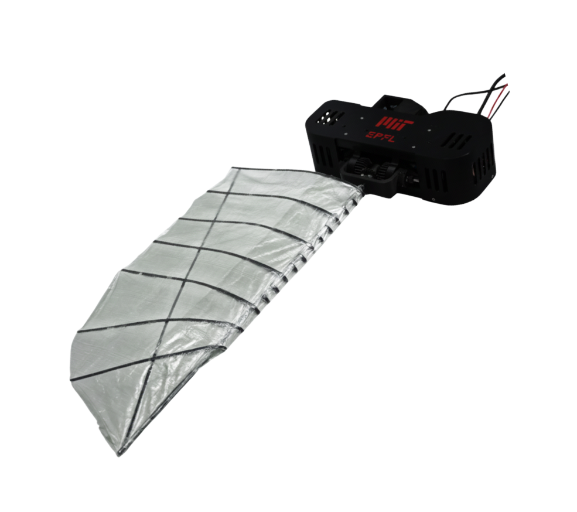
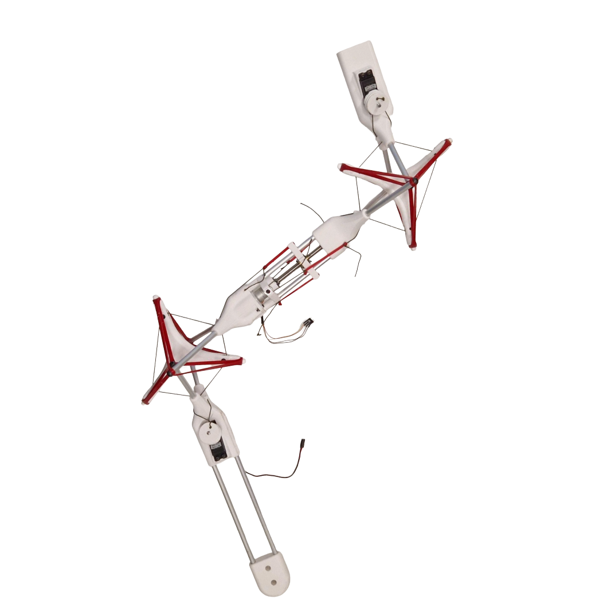
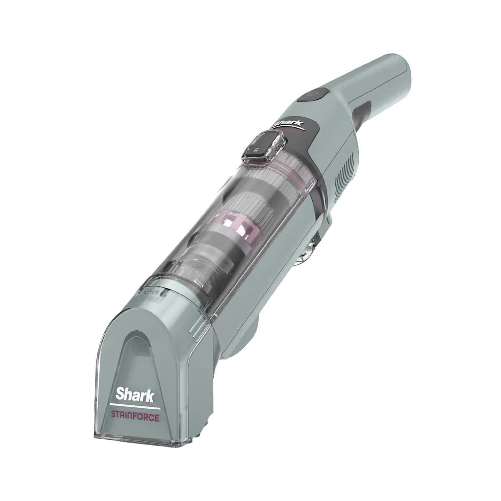
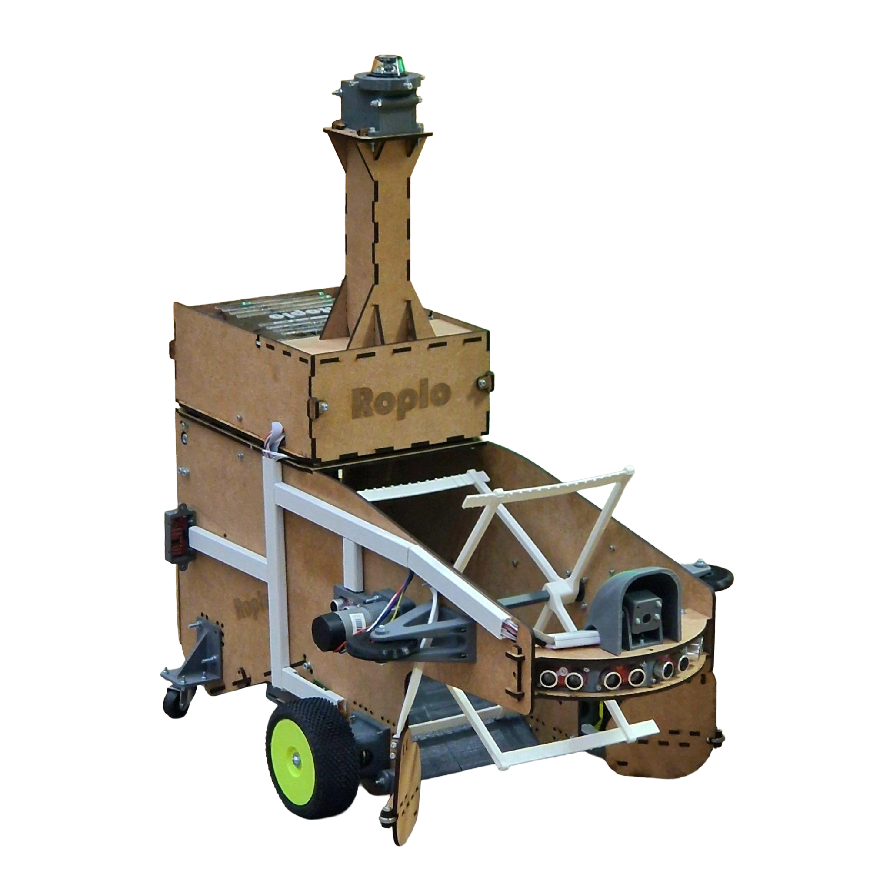
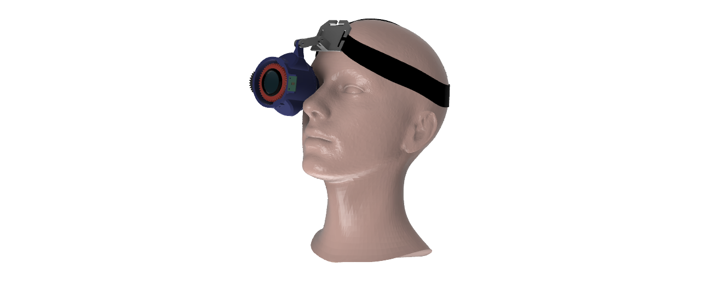
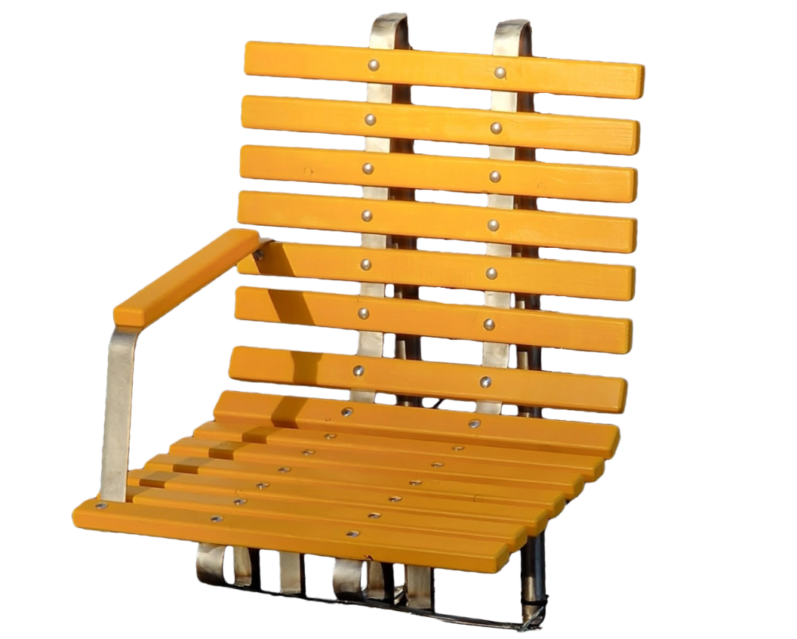
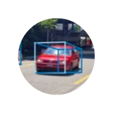
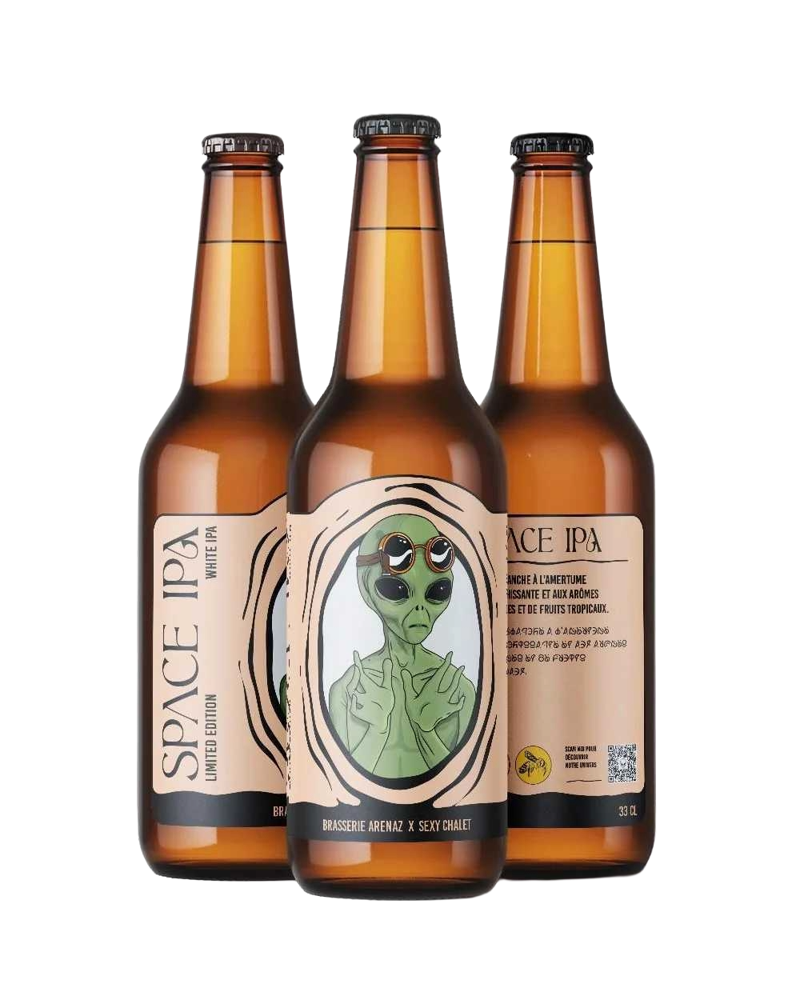

Erik
Mortensen
Mortensen
Robotics Engineer — Boston, MA
Designing, building, and testing the hardware that makes robots move. Passionate about mechanical design, bio-inspired systems, and the space where engineering meets elegance.
Current roleResearch Specialist · MIT
EducationMSc Robotics · EPFL
StatusOpen to opportunities
01
About
Feb 2026 — Present
Research Specialist
Continuing research on aerial-aquatic flapping-wing drones. Leading hardware design, simulation, and experimental validation towards a fully autonomous drone, while managing two undergraduate research assistants.
Mar 2025 — Oct 2025
MSc Thesis — Flapping-Wing Drones
Publication pending
Designed, built, and programmed a fully integrated one-wing prototype to study pitch control for improved locomotion efficiency in air and water.
Jul — Dec 2024
Mechanical Engineering Intern
SharkNinja · Boston, MA
Product Released
Worked across the full product creation cycle on the Shark StainForce™ vacuum line — ideation through mass production. Optimized multiphase flow separation technology. Managed a small team of test engineers.
Feb — Jul 2024
Sales & Production Assistant
Docteur Gab's Brewery · Lausanne, Switzerland
Part-time role as brand ambassador and production line worker at an independent craft brewery.
Sep 2022 — Oct 2025
MSc in Robotics
EPFL · Lausanne, Switzerland
Published — IEEE Robosoft 2025
Specialization in Mobile Robotics. Coursework and semester projects spanning autonomous systems, legged locomotion, controls, bio-inspired design, and deep learning, with an emphasis on hands-on project work.
Sep 2018 — Jul 2022
BSc in Mechanical Engineering
Foundation in mechanics, mathematics, physics, materials science, and programming. Includes one year on exchange at Chalmers University of Technology, Gothenburg, Sweden. Graduated with a strong interest in robotics and dynamic systems.
02
Projects








03
Contact
I'm actively looking for full-time hardware engineering roles in the Boston area. If you're building robots and need someone who cares about getting the physical system right, I'd love to connect.